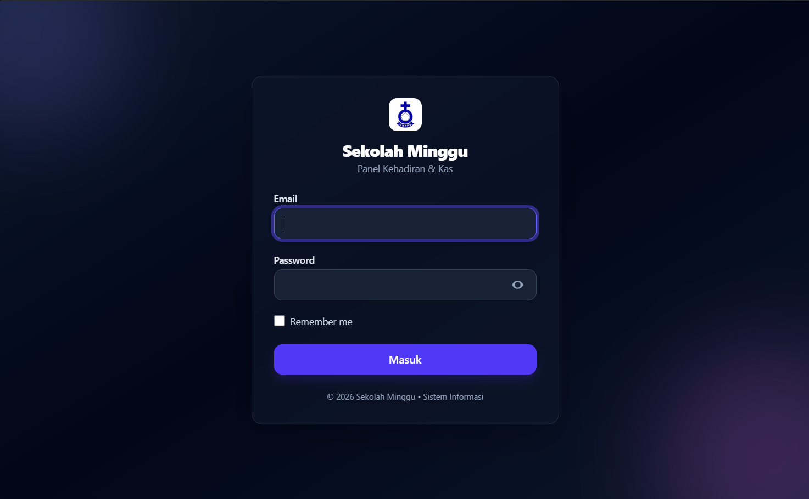

Ringkasan Project
Proyek ini dibuat untuk mempermudah manajemen data sekolah minggu dengan sistem yang sederhana namun tetap terorganisasi.
Information System • Laravel
Sistem informasi berbasis web yang membantu pengelolaan data sekolah minggu dengan fitur pencatatan kegiatan, anggota, dan informasi penting secara terpusat.

Proyek ini dibuat untuk mempermudah manajemen data sekolah minggu dengan sistem yang sederhana namun tetap terorganisasi.
Fitur utama
Informasi anggota dapat dicatat dan dikelola dengan lebih terstruktur.
Kegiatan sekolah minggu bisa disusun dan dilihat dengan lebih rapi.
Seluruh data penting dapat diakses dari satu sistem yang terintegrasi.
Gallery
Teknologi
Jelajahi proyek lain yang juga sudah saya bangun beserta gambaran detailnya.
Lihat Semua Project